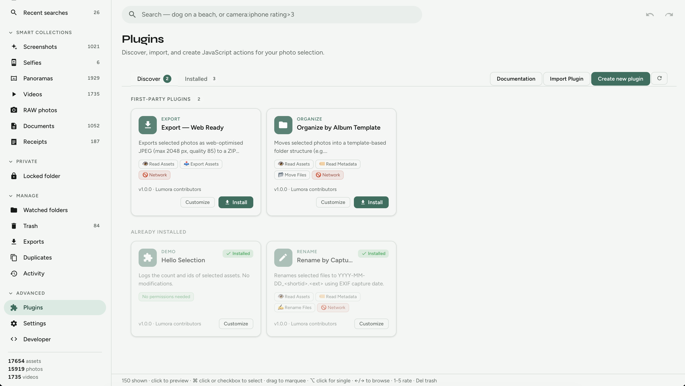

Plugin documentation
Build Lumora plugins
Extend LUMORA with sandboxed JavaScript actions on your photo selection. No network access, no hidden state — every plugin is a folder on disk you can read and edit.
Plugin gallery
First-party examples you can install from Discover or copy from the repo. Each is a readable folder on disk.

Organize by template
Automatically sort photos into folders with a year/album template.
// OPTIONS.template
"${year}/${album}/${filename}"Export web-ready
Export Instagram-ready / web-sized copies from a selection.
lumora.exportAssets({ … })Rename by date
Bulk rename selected files from capture dates — Lightroom-friendly workflows.
lumora.renameAsset(id, name)Hello selection
Minimal starter — log the current selection. Best first template.
lumora.getAssets()Starter templates
- Selection action —
hello-selection - Bulk rename —
rename-by-date - Metadata / folder export —
organize-by-template - Export workflow —
export-web-ready - Custom workflow — fork any example and edit
main.js
Plugin marketplace roadmap
Not shipping yet — direction of travel:
- Community plugins
- Plugin ratings
- One-click install
- Plugin signing
- Marketplace
Aspirational ideas (caption generators, advanced duplicate auditors) belong here once community packaging lands — today, ship them as local plugin folders.
Overview
Plugins live under {app_data}/plugins/. Each plugin exposes one or
more selection actions that appear in the
Plugins menu when photos are selected.
- No network —
fetchandXMLHttpRequestare blocked - Explicit permissions — the host enforces capabilities declared in the manifest
- Auto-inferred permissions — the in-app editor adds them from your
main.json save
Quick start
- Open Plugins in LUMORA → Create new plugin
- Fill in name, id, and action label
- Edit
runActionin the code editor (lumora.autocomplete) - Save — permissions are inferred automatically
- Select photos → Plugins in the selection bar → run your action
Or install an example from Discover, then click Customize to fork it into a personal copy.
Folder structure
{app_data}/plugins/com.personal.my-plugin/
lumora.plugin.json ← manifest (required)
main.js ← entry script (required)
README.md ← optional notesThe folder name must match the id in the manifest.
Entry script (main.js)
export async function runAction(actionId, context) {
lumora.log("info", `${context.assetIds.length} selected`);
context.reportProgress(0, context.assetIds.length);
// your logic here
return { ok: true, message: "Done" };
}context.assetIds- Ids of selected photos
context.mode"preview"or"apply"context.reportProgress(n, total)- Updates the progress dialog
lumora.* API
| Method | Permission |
|---|---|
lumora.log(level, msg) | none |
lumora.getAssets(ids) | read:assets |
lumora.renameAsset(id, name) | rename:filesystem |
lumora.setRating(id, rating) | write:metadata |
lumora.setTags(id, tags) | write:metadata |
lumora.moveAssets(ids, dir) | move:filesystem |
lumora.exportAssets(ids, opts) | export:assets |
Reading fields like .capturedAt, .rating, or
.camera on assets requires read:metadata.
Permissions
Permissions are written to lumora.plugin.json when you save in the
editor. Undeclared API calls fail at runtime.
read:assets— load paths and idsread:metadata— EXIF, ratings, camerawrite:metadata— ratings and tagsrename:filesystem— rename on diskmove:filesystem— move into foldersexport:assets— export copies
Example plugins
First-party examples ship in plugins/examples/. Install from Discover in the app, or browse source on GitHub:
Hello Selection
Logging only — no permissions. Good starting point.
export async function runAction(actionId, context) {
lumora.log("info", `${context.assetIds.length} asset(s) selected`);
for (const id of context.assetIds) {
lumora.log("info", id);
}
return { ok: true, message: `Logged ${context.assetIds.length} ids` };
}Rename by Capture Date
Uses read:metadata + rename:filesystem. Renames to
YYYY-MM-DD_shortid.ext from EXIF capture date.
const assets = await lumora.getAssets(context.assetIds);
for (const asset of assets) {
const date = asset.capturedAt ?? asset.createdAt;
const newName = `${date.slice(0, 10)}_${asset.id.slice(0, 8)}.jpg`;
await lumora.renameAsset(asset.id, newName);
}Export Web Ready
Exports resized JPEG copies — requires export:assets.
Organize by Template
Moves files into a folder structure from a template — move:filesystem.
Personal forks
Click Customize on Discover or Save copy on an
installed plugin. Lumora copies the plugin to a new id (e.g.
com.personal.fork-rename-by-date) so you can edit without changing
the original.
Troubleshooting
| Symptom | Likely cause |
|---|---|
| Action not in menu | Plugin disabled or not installed |
| Permission error | API used but not in manifest — re-save in editor |
PLUGIN_RUNTIME_ERROR |
JS exception — check run history on Installed tab |
| Timeout after 120s | Infinite loop or unresolved promise |
Full specification
For manifest schema, host architecture, and milestone details, see docs/plugins.md and docs/plugin-author-guide.md in the repository.